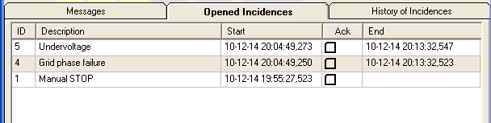
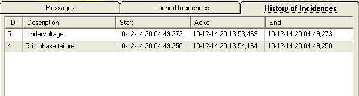

1.Check again the failing phase check-box restoring it to its normal state. Verify that all the phases and the Main Switch are in operational state, give some time to the ControllerEmulator to identify this situation. The ControllerEmulator will record the instants in which those (good) conditions are meet and write them to the Incidences logger.

2.This type of Incidence must be acknowledge. Therefore you must go to the "Opened Incidences" tab of the "Control Terminal" and check each of them, by a double-click in the corresponding "Ack" check-box. Once recognized by the Operator, these incidence goes to the Historical record. Look at de history of incidences in the corresponding tab of the Control Terminal.

3.The Operator may recognize these incidences before their faulty condition is not removed. In this case, when this condition is removed and return to a adequate value, it goes directly to the Historical record.
Same incidence but in Production
4.Press START, if the Wind Turbine was in STOP state, change the wind to a value valid for start production, 6 m/s for instance, and wait until de Wind Turbine start a normal cutin, yawing facing wind, RPMs growing up, and so on.
5.Once in production state, turn off the main switch in the Electrical Panel and see how the controller stops the Wind Turbine using the brake (stop type 3). This STOP sequence does not use the air brake as starting phase trying to reduce the amount of kinetic energy in the DriveTrain, but uses directly the hard braking system (caliper against the braking disc).
6.Experiment with different ways to simulate a Grid failure with the Wind Turbine in the STOP state and in production (START), and take a look at the two incidence tabs in the Control Terminal, dates: "Start" , "Ackd" and "End".
7.Open in a StripRecorder with a pane with the RPMs, and perhaps the Controller State Machines. Observe the differences in the RPMs slow down graphics between a "Manual STOP" and a stop due to Grid failure. Do this test with low wind (5.0 m/s) and sampling rate of 0,2s.